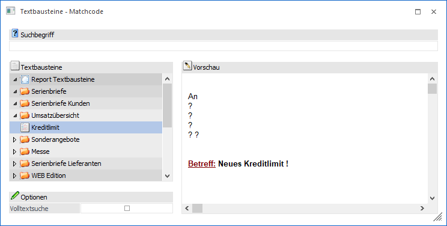
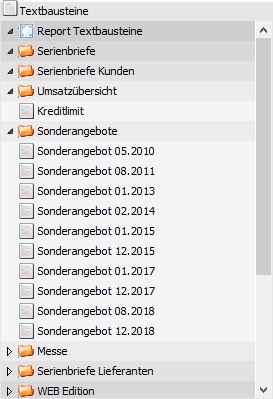
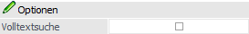
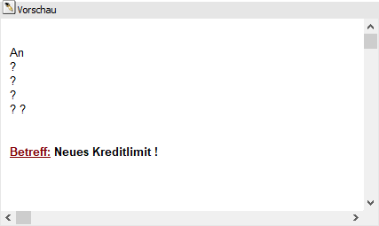
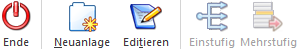

Wenn der Fokus in dem Feld "Textbaustein" liegt und das Lupen-Symbol bzw. die Taste F9 gedrückt wird, dann öffnet sich das Programm "Textbausteine - Matchcode". An dieser Stelle kann gezielt nach Textbausteinen gesucht werden.
Hinweis
Wenn in dem Feld "Textbaustein" ein Teil des gesuchten Namens eingetragen wurde und die Taste F9 gedrückt wird, dann wird diese Eingabe als Suchbegriff übernommen und die Suche direkt gestartet.

Suchbegriff

Ø Suchbegriff
Die Auswahl kann durch die Eingabe eines Suchbegriffs eingeschränkt werden. Die Suche erfolgt in dem Feld "Textbausteinname" und wird durch Bestätigung des Begriffs ausgelöst.
Übersicht "Suchergebnis"

In der Übersicht werden nach Auslösen der Suche (Suchbegriff bestätigen) die gefundenen Texte mit ihrer Ordnerstruktur angezeigt. Per Doppelklick oder Enter-Taste kann der ausgewählte Text anschließend in das Ausgangsfenster übernommen werden.
Optionen

Ø Volltextsuche
Durch Aktivieren der Option "Volltextsuche" wird der Suchbegriff nicht mehr im Namen, sondern im Text des Textbausteins gesucht.
Vorschau

Ø Vorschau
In diesem Teil des Fensters wird eine Textvorschau jenes Textbausteines angezeigt, welcher in der Übersicht ausgewählt wurde.
Buttons

Ø Ende
Durch Anwahl des Buttons "Ende" bzw. der Taste ESC wird das Fenster geschlossen.
Ø Neuanlage
Durch Anwahl des Buttons "Neuanlage" wird das Fenster Textbausteine geöffnet, in welchem neue Texte angelegt werden können.
Ø Editieren
Der markierte Textbaustein wird im Fenster Textbausteine zum Editieren geöffnet.
Ø Einstufig
Dieser Button steht nur in Zusammenhang mit der WebEdition zur Verfügung.
Ø Mehrstufig
Dieser Button steht nur in Zusammenhang mit der WebEdition zur Verfügung.